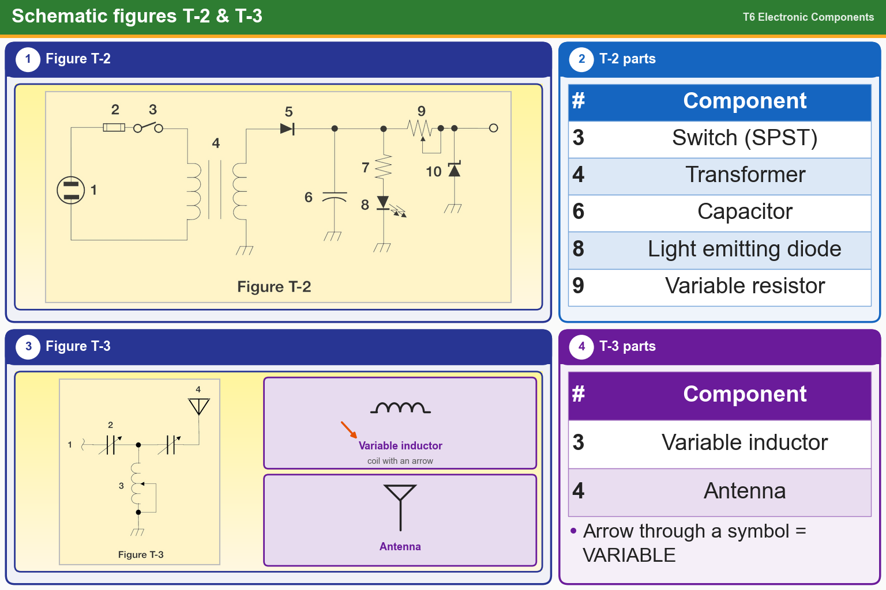

💡 T-2: 4 transformer, 6 capacitor, 8 LED, 9 variable resistor. T-3: 3 variable inductor, 4 antenna.
📚 Key words
- Capacitor
- Two parallel lines (component 6 in T-2).
- LED
- Diode triangle with arrows pointing out (8 in T-2).
- Variable resistor
- Resistor with an arrow through it (9 in T-2).
- Transformer
- Two coils side by side (4 in T-2).
- Variable inductor
- Coil with an arrow through it (3 in T-3).
- Antenna
- A line with a "Y" or fork on top (4 in T-3).
Press Check on any question to see if you're right (it won't show the answer), or Grade at the bottom to grade the whole page.
T6C06
Figure T-2
What is component 6 in figure T-2?
✘A.Regulator IC
✔B.Capacitor
✘C.Resistor
✘D.Transistor
T6C07Figure T-2
What is component 8 in figure T-2?
✘A.Resistor
✘B.Regulator IC
✘C.Inductor
✔D.Light emitting diode
T6C08Figure T-2
What is component 9 in figure T-2?
✘A.Variable transformer
✘B.Variable inductor
✔C.Variable resistor
✘D.Variable capacitor
T6C09Figure T-2
What is component 4 in figure T-2?
✘A.Variable inductor
✘B.Potentiometer
✘C.Double-pole switch
✔D.Transformer
T6C10
Figure T-3
What is component 3 in figure T-3?
✘A.Connector
✔B.Variable inductor
✘C.Meter
✘D.Variable capacitor
T6C11Figure T-3
What is component 4 in figure T-3?
✘A.Transmitter
✔B.Antenna
✘C.Ground
✘D.Dummy load